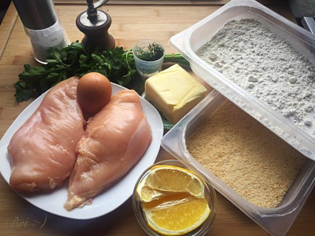
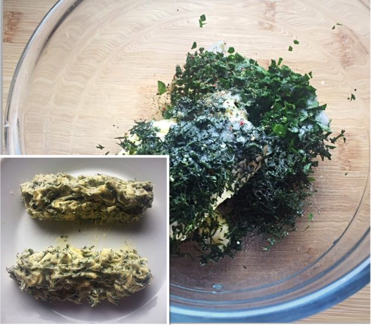
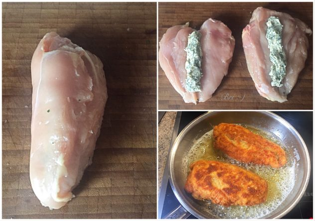
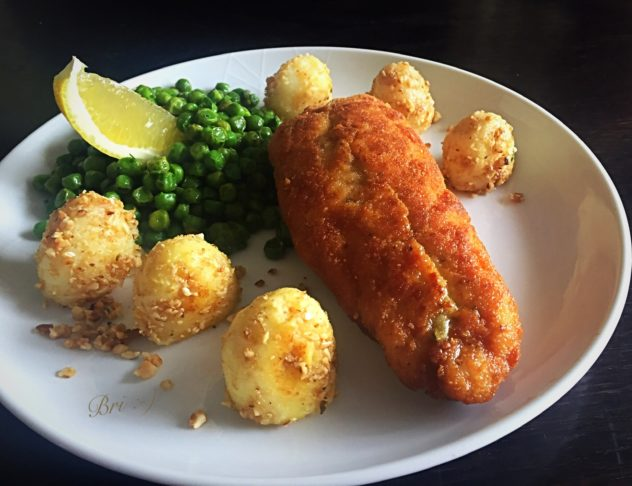

Zutaten
- 2 Hühnerbrüste
- 100 g weiche Butter
- Dill & Petersilie
- Zitronensaft
- Salz, Pfeffer
- 1 Ei + 1 EL Sahne
- Mehl, Semmelbrösel
Zubereitung
Butter mit Kräutern, Zitronensaft, Salz und Pfeffer mischen. Zwei Rollen formen und kalt stellen.
Hühnerbrüste einschneiden, Butter einlegen, gut verschließen.
In Mehl, Ei und Bröseln panieren. In 160 °C heißem Fett 6–8 Minuten goldbraun ausbacken.
Dazu passen Reis, Kartoffeln oder Salat.
